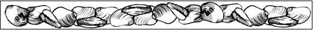
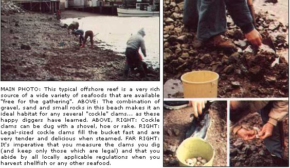

If you're one of the nearly fifty percent of all Americans who live less than an hour's drive from salt water, you may never have to buy seafood again!
Louis Bignam:
Mmmm-MMMMI Clam chowder so rich that you can almost eat the steam . . . mussels delicate enough in flavor to shame the adjectives that are normally used to describe tastes ....
Is this the bill of fare for a $30 dinner? Nope, these fancy foods are available "free for the takin' " to almost anyone within foraging range of an ocean . . . and it won't take days of digging to fill your kettle, either.
Best of all, no expensive equipment is necessary to harvest your share of this seafood bounty. A good field guide (the bible on this subject is still Stalking the Blue-Eyed Scallop by Euell Gibbons), a desire to spend the day surrounded by the sounds and smells of the beach, and a willingness to brave water, mud, and rocks . . . will just about do to get you started.
Since the variety of Seafoods that can be gathered easily is great-and since the methods of collection differ from one critter to the next-it would be dang-nigh impossible to describe everything about this particular brand of wild food foraging in just one article. So, I'll tell you what my years of experience (and countless marine biology courses) have taught me about tidal foraging in this issue of MOTHER . . . and save the deeper water species for the next. But let's not waste time gabbin' when the sacks are empty!
Bivalves-mollusks with two hinged shells-make up the bulk of my seashore scavengings ... simply because they're readily available and are awfully fine eating. Even if you're a novice forager, you can fill your belly without difficulty on your first trip out if you concentrate on this large group of edibles.
Before we get down to specifics, however, a few words of caution are in order: Most mollusks feed by siphoning In water and straining out and absorbing the small bits of food (or anything else) that they happen to suck in with the liquid. Which, unfortunately, means that-where man has contaminated the water-these creatures can become tiny storehouses of poison. ALWAYS MAKE SURE OF ITS WATER PURITY THROUGH THE LOCAL HEALTH DEPARTMENT BEFORE COLLECTING AND EATING BIVALVES FROM ANY BEACH, TIDAL FLAT, ETC.
A call to the Fish and Game Department in the area-to determine seasons, size and bag limits, and license needs-is also a good idea. Local sporting goods stores can sell you a permit (if one is needed). They usually can e supply you with a yearly tide table, too . . . which will help you plan your expeditions around the prime foraging times (from two hours before low tide till two hours after).
Finally, NEVER EAT ANY SHELLFISH THAT ISN'T UNQUESTIONABLY FRESH. A general rule is to discard each and every bivalve that doesn't resist your efforts to open its shell, or that doesn't close itself more tightly when touched.
O.K., now that you've checked the purity of the water in your area, protected yourself against the game warden, and promised not to eat anything that wasn't alive when you found it . . . you're probably eager to start fillin' up that of collection bag. And the quickest way to make the sack bulge is with a passel of mussels.
Members of the genera Mytilus and Modiolus-mussels of one variety or another-can be found along just about any portion of the North American coastline . . . east or west. Westerners should limit their gathering to a season running from November through April, since-during the rest of the year-the bivalves found in their area may ingest microscopic dinoflagellates which can cause illness in humans. And the old rule of thumb-only harvest shellfish during months that contain an "r"-should do quite nicely for folks on the East Coast.
Once the season begins, a sharpened tire iron or heavy bladed knife and a gunnysack (I prefer a backpack lined with a plastic bag . . . it keeps my hands free) will be all the tools you'll need to go musselin'.
Finding yourself a bed of delicious mollusks to dig into Should present no problem, either. Just locate a rocky area near the low tide line and-if mussels are present-you'll be hard pressed not to walk on 'em. My favorite "gatherin' grounds" are upwards of a half mile long and composed of clusters of tasty shellfish packed together like mosaic tiles!
Obviously with colonies of this size and density, it's an easy matter to pry off enough (a dozen apiece will do for most folks, two dozen will satisfy even the most voracious consumer of seafood) for your eatin' needs.
And while you're foraging up those mussels, have a look around the rocks for a clump of the long-stemmed, white-shelled goose barnacles whichthough they look like a cross between a mushroom and a gander-are closely related to crabs. These bizarre creatures (of the genus Mitella on the West Coast and Lepas in the Atlantic) are lobster-like in flavor and as easy as pie to collect. I just scrape the black stems off of their rocky perches . . . and try for a compromise between getting the maximum amount of stalk with the minimum of grit and sand!
I steam most of my catch right on the beach in a 30-gallon army surplus kettle, and the barnacles get popped into the water right along with my day's mussel harvest. Their white-shelled tops can be discarded after steaming, the stems cut open, and finger-sized pieces of meat pried out. Furthermore, since the taste of these dainties Is akin to that of the clawed crustaceans, goose barnacles can be substituted in any recipe that calls for crab or lobster.
Those patches of gravel surrounding the masses of stone (which harbored the barnacles) should be foraged too: They're often the homes of small clams and of several types of mollusks called cockles.
That last name, by the way, probably should be clarified at least a little before we proceed any further: On the eastern seaboard "cockle" usually refers-more or less accurately-to members of the genus Cardium. On the Pacific Shore, however, the same term is applied to mollusks of at least four different genera. This confusion is seldom a problem, though, because in local usage "cockle" most often seems to translate as "good eatin' clam". See what the area's residents gather, double check with your field guide (local prejudices often cause folks to ignore delicious shellfish), then have a go at the little bivalves on your own.
You'll be thankful (as many a sore-backed digger has been) that cockles have no breathing siphons at all . . . and, because of this inconvenience (to them), must limit their belowground travel to within an inch or two of the sand's surface. A clam rake, hoe, or shovel should be the only tool you'll need to gather the tasty little rascals . . . however, due to the rocky nature of the sand in which cockles are generally found, even a small amount of digging will be anything but easy. (Remember, too-after you straighten out the kinks and leave the seaside for the day-that a freshwater rinse will greatly extend the life of your foraging equipment. Perhaps it'll make you feel better, too!)
The Pacific Ocean is a powerful big body of water, and some of the clams that inhabit its North American coastline are nothing less than giants. The most common of these monsters-found in mud and sand flats from Alaska to San Diego-is the horse clam (Schizothaerus nuttalll).
It isn't necessary to wait for a particularly low tide to snare a few of these whoppers (they run all the way up to four pounds each). The only real job-after you sight the spouts from their squirt holes between the low and high water marks-is diggin' 'em out . . . since even when they're spraying water three feet into the air, these clams may well be buried another yard deep !n the sand. Dig the giants out anyway. When properly cleaned and prepared, they're more than worth the effort.
I've found that the flavor of horse clams-and that of other bivalves found in muddy sand-can be improved by storing the shellfish alive in a large, shaded tub of seawater (or in a cage sunk beneath the surface of the ocean itself) for about 48 hours. If you then add cornmeal to the water, you'll fool the critters into replacing any slit in their bodies with the grain. This simple treatment will make most any bivalve taste better, and has let me enjoy some species that the local diggers thought inedible.
No discussion of clams (at least here in California) would be complete without a mention of the gismo. This, the Golden State's most famous mollusk (the shellfish is a tourist attraction !n its own right), is found in open sandy areas from Half Moon Bay, near San Francisco, all the way down to southern Mexico. Believe !t or not, the gismo clam (genus Tivela) supports an entire digging industry ... complete with chauffeured boat rides to prime beaches and shoreside equipment rentals. Unfortunately, the gismo's population-despite rigid size and bag limits-is on the decline in popular clamming areas. It should be looked upon as a special occasional treat, then, rather than a reliable source of wild food. Better yet, concentrate on the more common varieties of bivalves and thus do your bit toward giving this surf dweller a chance to reestablish itself.
As I've already noted, I generally steam a large percentage of the seafood I forage alongshore within yards of where I find it. I chow down my fill right on the spot, and pack the remainder of the cooked meat in single dinner-sized plastic bags . . . ready for the freezer and future soups and chowders.
As you probably know, steaming is the simplest form of seafood cookery imaginable. A little water (or perhaps some white wine for a flavor treat)-just enough to cover the bottom of the pot and not boil completely away . . . certainly not enough to cover the food that's being prepared-in a kettle with a close-fitting lid are all you need to do the job. Clams and mussels will be done when the shells open wide (after approximately twenty minutes of steaming) ... and barnacles will be ready when the clams are. I always take along a couple loaves of French bread when these cookouts become group parties . . . a pound or two of butter ... and sufficient wine to wash everything down. What could be simpler? Or tastier?
Still, that's only the most basic form of shellfish preparation . . . and a little variety can be welcome from time to time (especially if you forage the beaches as often as I do). The following recipes from the book Stalking the Blue-Eyed Scallop by Euell Gibbons (available for $3.95 plus 95 cents shipping and handling from Mother's Bookshelf, P.O. Box 70, Hendersonville, North Carolina 28739) are reprinted here with the permission of the David McKay Co., Inc., and should satisfy the most discriminating epicureans:
Cut 1 large onion and about 4 slices of bacon into small bits and fry them together until the onion is golden yellow and translucent. Then add 2 cups of diced potatoes, cover everything with water, and boll until the spuds are done. While the potatoes are still cooking steam 2 dozen clams (more or less, depending upon their size and how many you have) and-after steaming-grind their meat in a food chopper. This clam meat and broth from the steaming kettle are then added to the chowder. Immediately pour in a quart of milk, 1 teaspoon of monosodium glutamate (I don't know why Gibbons used this seasoning, but he did . . . leave it out if you want to), and 1/4 teaspoon of freshly ground black pepper. While the mixture is heating (only to a simmer), blend 1 tablespoon of flour into 1/4 cup of milk, slowly add the solution to the chowder, and continue to stir until the soup slightly thickens. Try to avoid boiling the rich brew after the milk has been added, but do simmer it gently for 10 minutes after adding the thickening. Serve the steaming chowder (ambrosia!) with crackers on the side.
Scrub (with a stiff vegetable brush or its equivalent) and steam open 4 dozen mussels, remove their meat, and chop it into coarse bits. Then dice one medium-sized onion and saute it in butter until it turns a clear yellow. Add 1 tablespoon of chopped parsley, 1/4 teaspoon of poultry seasoning, and 1-1/2 cups of bread crumbs. Cook the mixture (stirring it constantly) for about 2 minutes before removing it from the heat.
After you've taken the pot off the fire, stir In the chopped mussels and enough of the broth from the steaming kettle to dampen the bread crumbs slightly. And-finally-mix everything together, fill 2 dozen of the empty half-shells with the mixture, arrange the shells on a cookie sheet, and put them in the broiler until the tops of the stuffing have lightly browned. Then serve up the stuffed mussels while they're still sizzling!
If you want an absolutely perfect Barnacle Newberg, you have to prepare it in a double boiler. First, put the top (only) of the boiler over a low direct heat and use It to melt 1 tablespoon of butter. Then blend 1 tablespoon of flour into the butter. When this mixture has started to brown, set the double boiler top on its bottom section and finish cooking the blend over boiling water. Next add 1 cup of coffee cream and 2 or 3 dozen steamed barnacle stems (depending on their size). Cook for 10 minutes, add 2 wellbeaten egg yolks, and then cook and stir for another 2 minutes. Finally, add 1 /2 teaspoon of salt, a tiny pinch of cayenne, and 2 tablespoons of cooking sherry. Stir well again, and serve over toast. A bottle of dry white wine will go very well with this dish.
EDITOR'S NOTE: For more Information about foraging seafood, See MOTHER N0.14, pages 74-83 and MOTHER N0. 48, pages 88-90. And you can look forward to Part II of Mr. Bignami's article In MOTHER N0. 5418
|
 |
 |
|